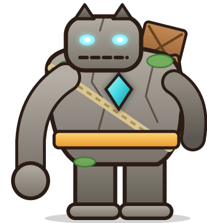

1
Los hijos de la ceniza
Durante generaciones, Ecuador convivió con los Colosos: criaturas gigantes de piedra que nacieron de la ceniza de los volcanes. Tenían los ojos de un cian brillante y una fuerza capaz de aplastar un pueblo entero.
Pero había un equilibrio. La Guardia Cóndor, una organización de exploradores y mensajeros, protegía los asentamientos con una red de comunicación que unía la Costa, la Sierra, Baños y la Amazonía. Una señal a tiempo salvaba pueblos enteros.
